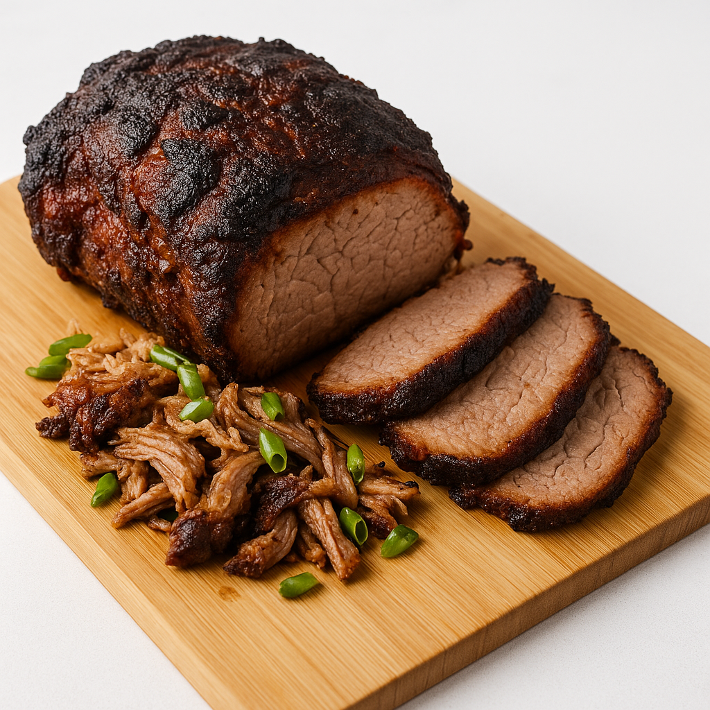

Admirals Club-inspired Breakfast Roast Pork

Yield: Serves 6–8
Ingredients
- 1 pork loin roast (3–5 pounds)
- 1 tbsp olive oil
- 2 tbsp Dijon mustard
- 1 tbsp honey
- 2 tsp dried rosemary
- 1 tsp dried sage
- 1/2 tsp black pepper
- 1 tsp salt
- 1 green onion, sliced thin (white and green parts)
Instructions
- Prepare the pork loin: Pat the pork loin roast dry with a paper towel. Score the fat cap with a sharp knife in a crosshatch pattern, being careful not to cut into the meat.
- Make the seasoning paste: In a small bowl, mix together the Dijon mustard, honey, rosemary, sage, salt, and pepper.
- Season the roast: Rub the olive oil all over the pork loin. Then, spread the mustard-honey mixture evenly over the top and sides of the roast.
- Roast the pork: Place the roast in a baking dish and cook in an oven preheated to 375°F (190°C) for 45 to 60 minutes, or until the internal temperature reaches 145°F (63°C). Cooking time will vary depending on the size of your roast.
- Let the roast rest: Once cooked, remove the pork from the oven and transfer it to a cutting board. Tent it loosely with foil and let it rest for at least 5 to 10 minutes. This allows the juices to redistribute, ensuring a tender and moist result.
- Slice and serve: Slice the pork loin thinly against the grain. Sprinkle with fresh green onions and serve alongside scrambled eggs, breakfast potatoes, or avocado toast, as is often served in the Admirals Club lounges.